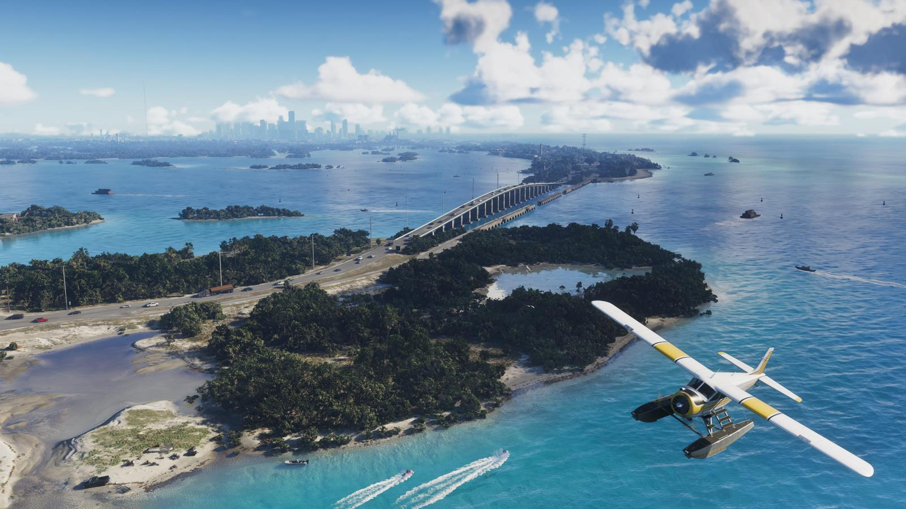
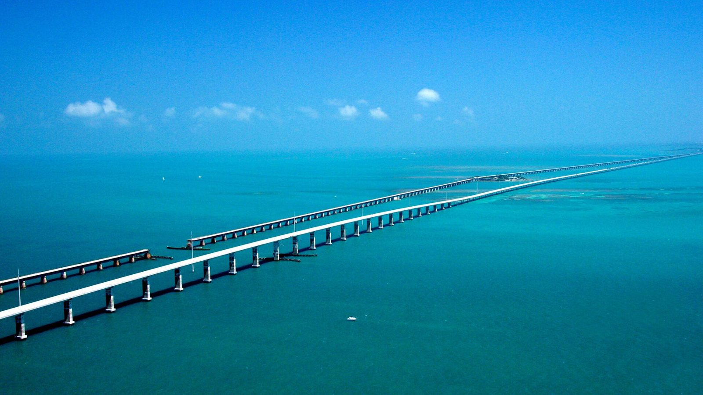
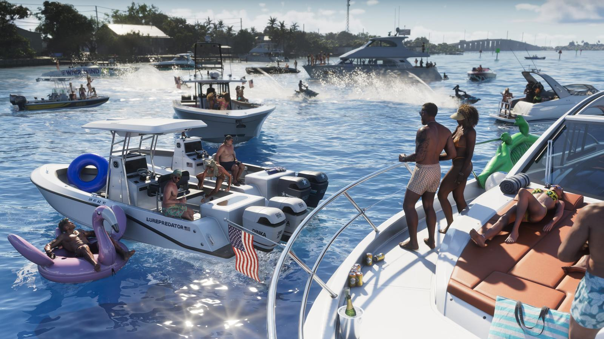

Leonida Keys и Флорида-Кис
Опубликовано:
Архипелаг, мосты, лодки и неспешная жизнь — это Флорида-Кис. Но острова и их названия в игре свои.


- Прототип — Флорида-Кис: цепочка из примерно 1700 островов.
- Главная деталь — дорога по мостам над океаном.
- В игре здесь живёт Джейсон.
- Rockstar: «Дресс-код свободный, бары полные».
Что в игре
«Дресс-код здесь свободный, бары полные. Жизнь на этом тропическом архипелаге не блестит, зато она лёгкая».
Rockstar Games, официальное описание Leonida Keys
На официальных кадрах — бирюзовая вода, лодочные причалы, домики и бары на сваях. По описанию героев, здесь, в доме контрабандиста Брайана Хедера, живёт Джейсон.

Что в реальности
Флорида-Кис — архипелаг к югу от материка. Острова связывает Заморское шоссе (Overseas Highway): около 180 км и 42 моста до Ки-Уэста. Самый известный — Семимильный мост: на фото рядом идут новый мост 1982 года и старый, построенный ещё для железной дороги.
Сначала через острова провели не шоссе, а железную дорогу: магнат Генри Флаглер достроил её до Ки-Уэста в 1912 году. 2 сентября 1935 года ураган Дня труда смыл часть пути. Восстанавливать её не стали: штат выкупил насыпи и мосты и в 1938 году пустил по ним автомобили.
Ещё одна местная легенда — Республика Раковины. 23 апреля 1982 года Ки-Уэст в знак протеста против пограничного поста на единственной дороге «объявил независимость», символически объявил войну США, через минуту сдался и попросил миллиард долларов помощи. Этот день на острове отмечают до сих пор.
Совпадает и отличается
| Флорида-Кис | Leonida Keys | |
|---|---|---|
| Цепочка островов | ~1700 островов | 🟢 Архипелаг |
| Дорога по мостам | Overseas Highway | 🟡 Мосты видны на кадрах, детали неизвестны |
| Бары, лодки, рыбалка | Да | 🟢 На кадрах |
| Ки-Уэст и названия островов | Реальные | 🔵 В игре свои |
Что будет на месте Ки-Уэста и будут ли карликовые олени, как на острове Биг-Пайн-Ки, узнаем 19 ноября.
Источники: Rockstar Games (официальное описание Leonida Keys); Florida Department of Transportation (Overseas Highway); NOAA (ураган Дня труда, 1935); U.S. Department of Transportation (фото).
Реальные фото: Фото: United States Department of Transportation, Public domain · Wikimedia Commons. Кадры игры: Rockstar Games.
Разборы кадров, слухи и факты за 30 секунд. Подписывайтесь:
YouTubeInstagramTikTok
 vs
vs
 vs
vs
 vs
vs